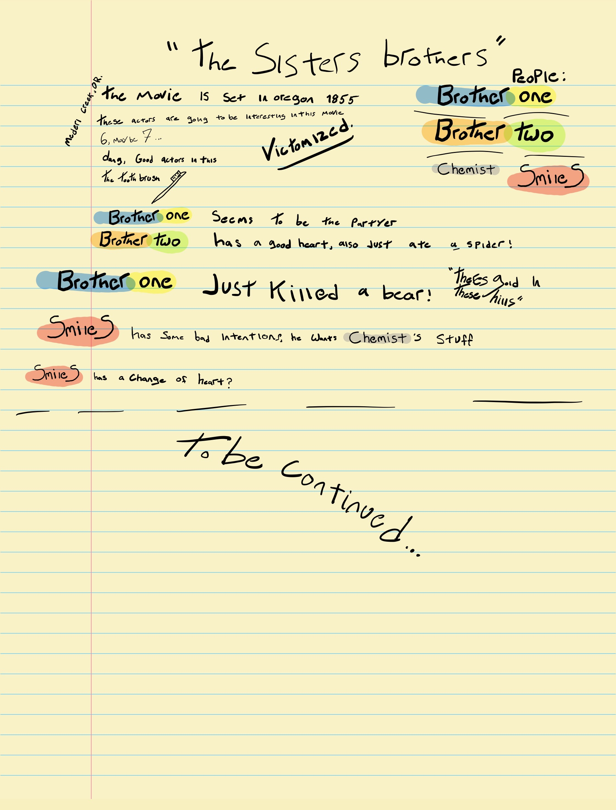

John C. Reilly (Main)
Joaquin Phoenix (Main)
Jake Gyllenhaal (Main)
Man, this is one I’m going to watch again soon!
I started watching with my notes in hand, then found myself becoming so pulled into the story I was forgetting to take notes. Finally I gave up trying, and decided to take notes the second time over and fully watch it. I went back to watch it the second time but my rental had run out of time, so I thought this could be a fun opportunity to wait and have you, (The reader) watch it, then next week’s column will be on the same film and maybe you caught some things I didn’t!
This film is a story of two brothers living in Oregon in 1850. The Brothers are “Hit Men” by trade and we watch the two brothers get tangled up in a gold rush world racing to make a claim. We watch the brothers battle the forces and each other for what they believe in.
I highly recommend a watch, and watch it before next week so we can talk about it!
Thank you for your time,
Jacob
*Spoiler Warning*
My friends Patrick and Sasha are coming over this weekend! I met them when I was going to college at Oregon State and they lived right above me on the second floor. The day Patrick and I first saw each other, we were both wearing shirts that had cactuses on them. Patrick and Sasha invited me over for food and beers and we played games and really got to know one another. I learned that Patrick and I both enjoy gaming. We both had Playstations and we played a few games together while we were both in Corvallis.
They had to move on with their lives to a different state while I stayed in Oregon to finish my degree.
I think it’s easy to discount gaming as not really hanging out but that’s not really true. Patrick and I not only stayed connected but deepened our friendship through mining, killing Oni, escaping the Arctic, and surviving in a jungle together. When we meet in the virtual realm, it gives us a chance to catch each other up on our lives and work on a common goal together. We learn how to work together and how to interact with each other to foster friendship.
The way people socialize is changing so fast. Young people have so many tools to make friends both virtually and in real life to maintain a healthy social life. As VR and the gaming industry (and the metaverse) continue to evolve, so will people’s capacity to connect with one another, unbound by physical location. And that is a beautiful thing.
I have the honor to be Your Obedient Servant,
Westley